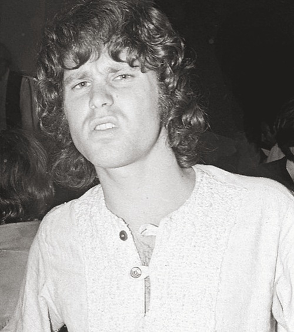
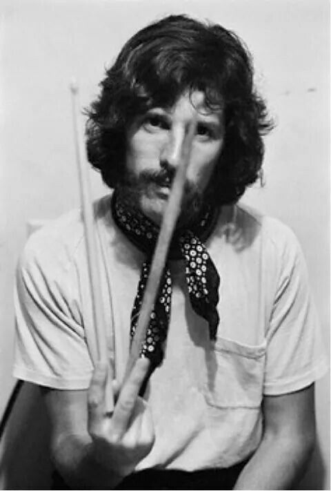
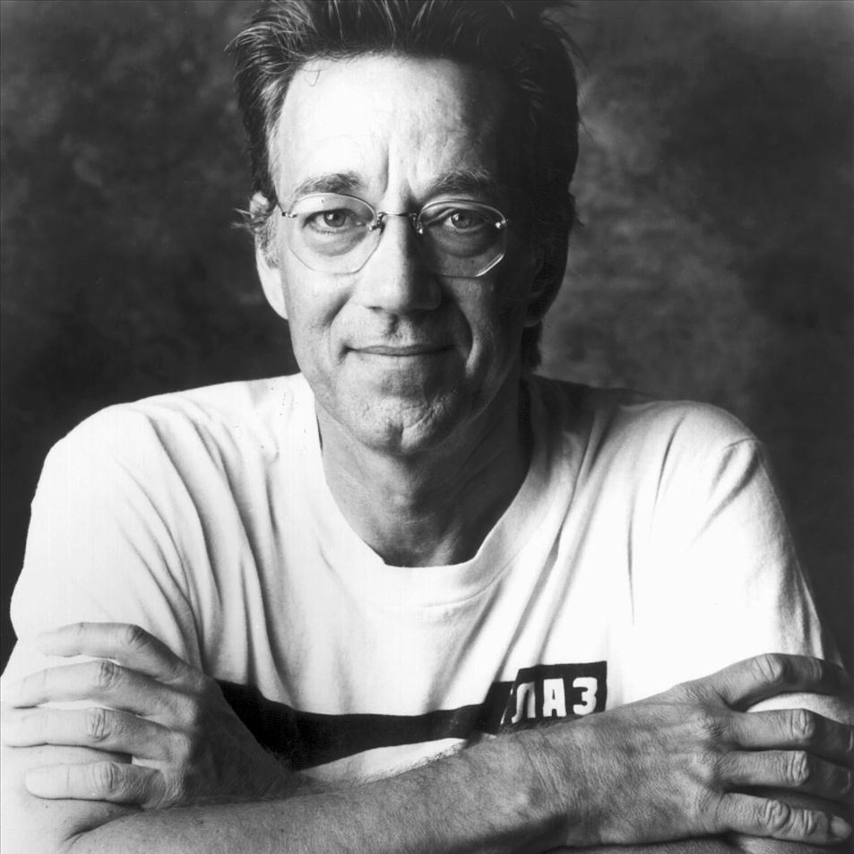
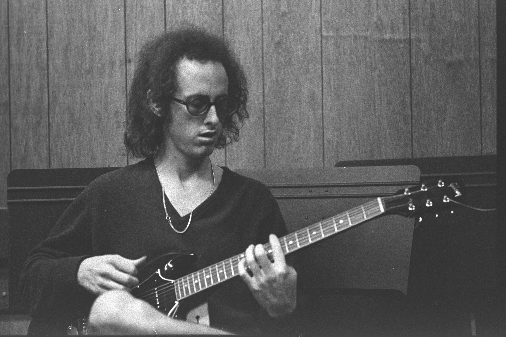

JIM MORRINSON
Cantante

James Douglas «Jim» Morrison fue un cantante, compositor y poeta estadounidense, célebre por ser el
vocalista de la mítica banda de rock The Doors. Wikipedia
Fecha de nacimiento: 8 de diciembre de 1943, Melbourne, Florida, Estados Unidos
Pareja: Pamela Courson; (1965-1971)
Fallecimiento: 3 de julio de 1971, París, Francia
JOHN DENSMORE
Batería, percusión

John Densmore es un baterista que fue parte del grupo de rock "The Doors" de 1965 a 1973.
Fecha de nacimiento: 1 de diciembre de 1944 (edad 74 años), Los Ángeles, California,
Estados Unidos.
Estatura: 1.82 m
Libros: The Doors Unhinged: Jim Morrison's Legacy Goes on Trial.
cónyuge: Leslie Neale (m. 1990), Julia Brose (m. 1970–1973).
Grupos musicales: The Doors (1965 – 2016), Rick & the Ravens (Desde 1965), Butts Band.
(1973 – 1975)
RAY MANZAREK
Organo electronico, piano electrico, piano, coros y bajo(en algunas ocasiones).

Raymond Daniel Manczarek fue un músico, cantante, productor, director de cine y escritor
estadounidense. Fue cofundador y teclista de la banda de rock The Doors entre 1965 y 1973, y en The
Doors of the 21th Century desde 2001.
Fecha de nacimiento: 12 de febrero de 1939, Chicago, Illinois, Estados Unidos.
Fallecimiento: 20 de mayo de 2013, Rosenheim, Alemania.
Estatura: 1.84 m.
Muerte: de mayo de 2013 (74 años); Rosenheim, Alemania.
:Nombre real Raymond Daniel Manczarek.
ROBBY KRIEGER
Guitarra, armónica.

Robert Alan Krieger es un guitarrista de Rock and roll y compositor. En la banda The Doors actuó como
guitarrista y escribió algunas de las canciones más famosas, como Light my fire, Love Me Two Times,
Touch Me y Love Her Madly. Wikipedia.
Fecha de nacimiento: 8 de enero de 1946 (edad 73 años), Los Ángeles, California,
Estados Unidos.
Estatura: 1.73 m.
Cónyuge: Lynn Krieger (m. 1972).
Grupos musicales: The Doors (1971 – 2016), The Doors of the 21st century, Butts Band.
Grupo musical: The Doors (1965 – 1965).